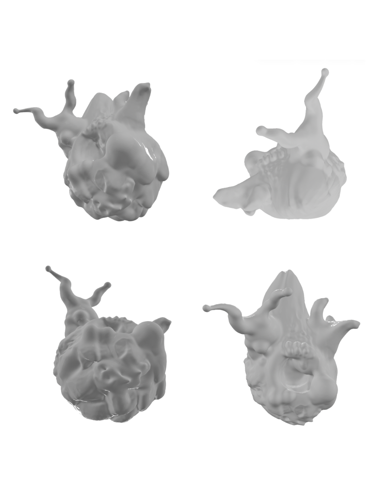
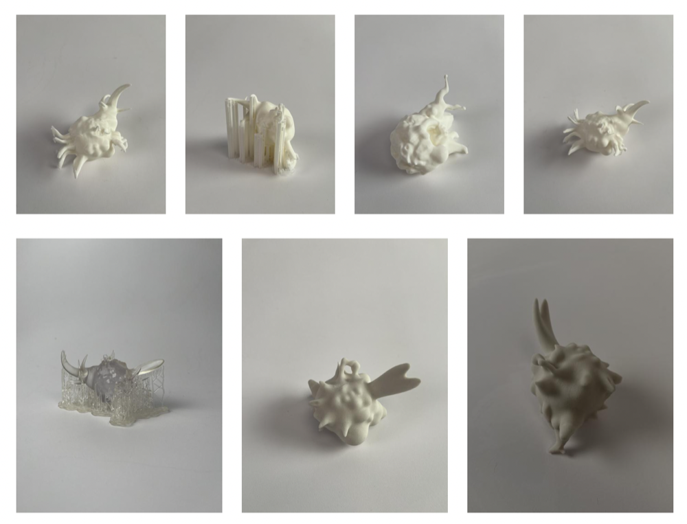
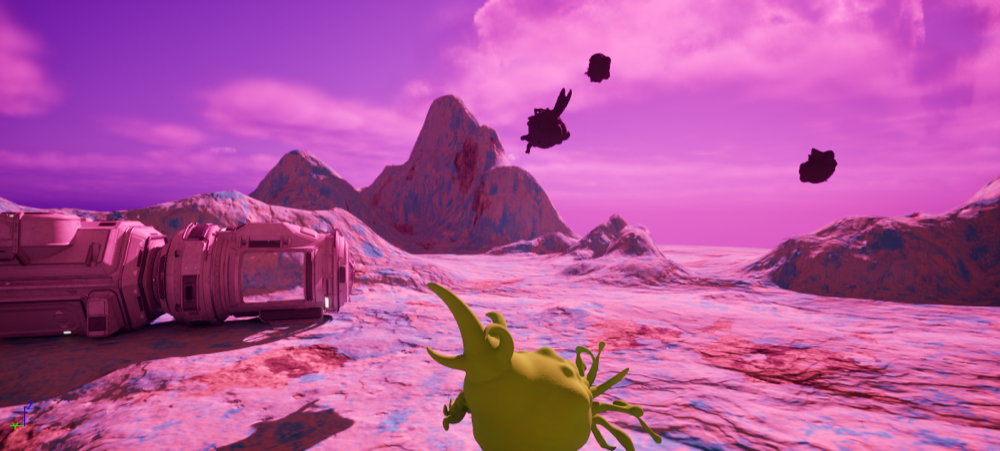
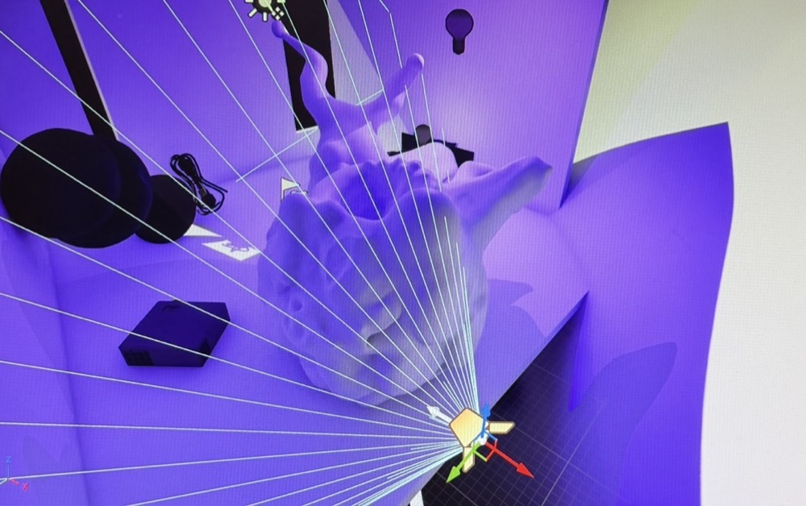
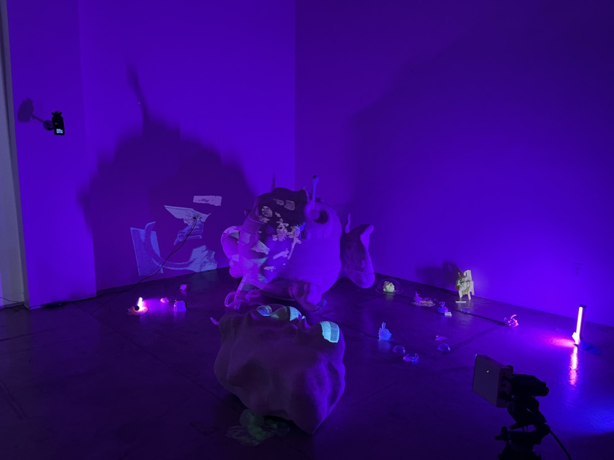

By Cathy Doss
Kylie starts her ideas in 3D sculpting programs like ZBrush and Nomad. She doesn't treat these like final modeling tools. She treats them the way someone else would treat a pencil and paper, just quickly sculpting shapes to see what the idea looks like.

Once she has a form she likes, she 3D prints it so she can hold it and look at it in real life. She also experiments with different materials to see how the same creature changes.

The prototypes aren't just standalone objects. They all feed into a bigger world Kylie is imagining: an outer space universe filled with creatures. She also brings her work into gaming engines, so the creatures can actually live in an environment.

Kylie also uses projection mapping and 3D scanning as part of her workflow. Sometimes she goes outside and scans real objects she finds, and then those become part of the work too.

All of these pieces come together into installations. One example is Miller's Planet (2024), a sound installation based on projection mapping, sound, and color.
